Материальность 14 снимков, с аннотацией 14
Зерно, печатная фактура, аналоговая деградация. Несущий полюс: он выражает конфликт «против цифровой стерильности».
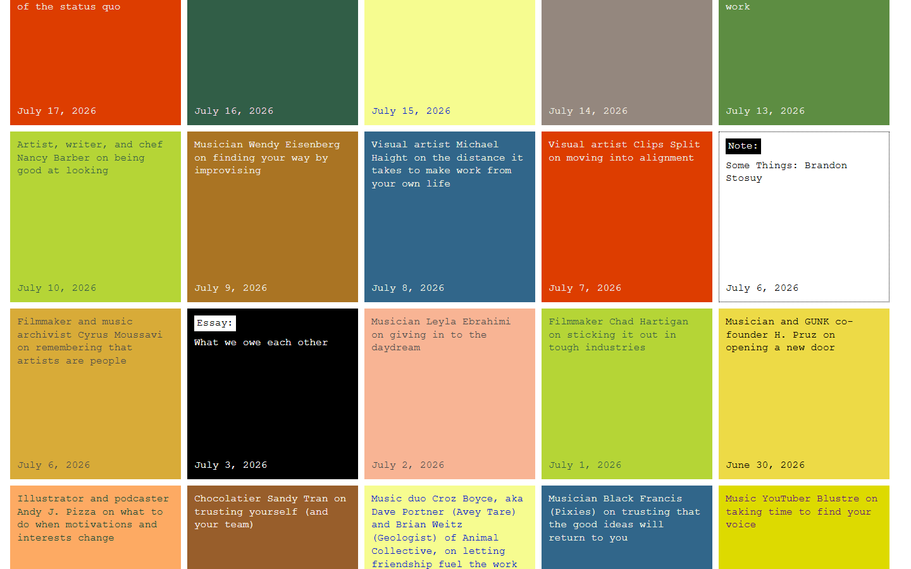
01 · mat-creativeindep--d-dense.png
· thecreativeindependent.com · Продолжение сетки плашек.
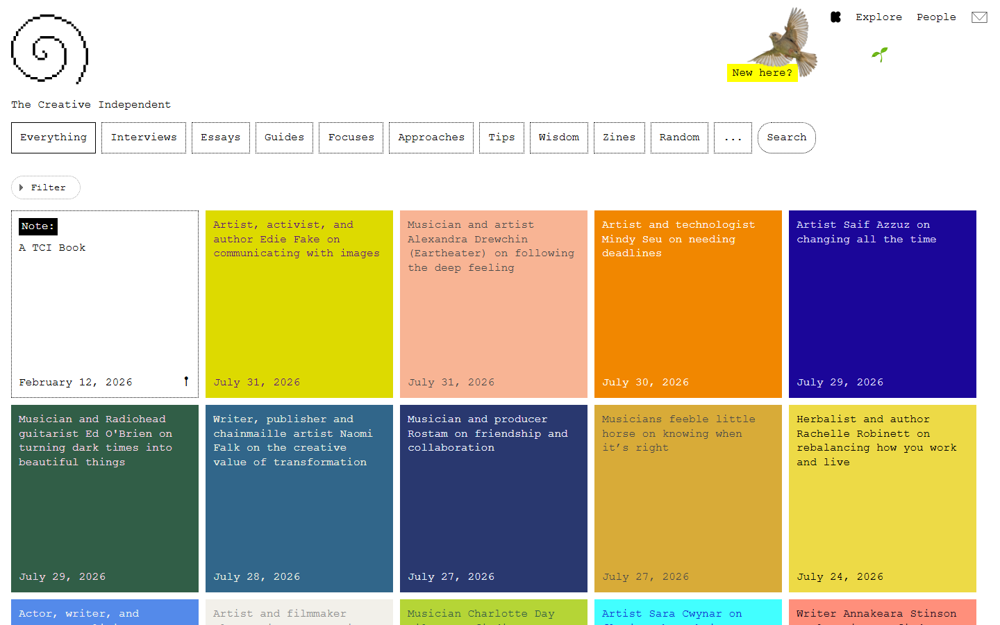
02 · mat-creativeindep--d-hero.png
· thecreativeindependent.com · Моноширинный набор, сетка цветных плашек, пиксельная спираль-логотип, гифка с птицей. «Рукодельный веб» — сделано человеком, не шаблоном. Тепло идёт от бумажного фона и наивных деталей, а не от беж-градиента. Годен и для полюса наивного вектора.
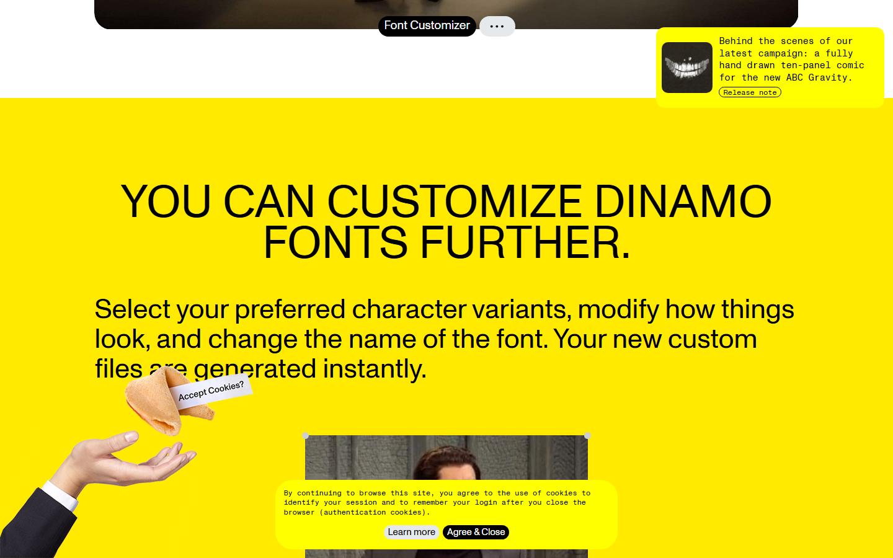
03 · mat-dinamo--d-dense.png
· abcdinamo.com · Второй экран: образцы гарнитур крупно.
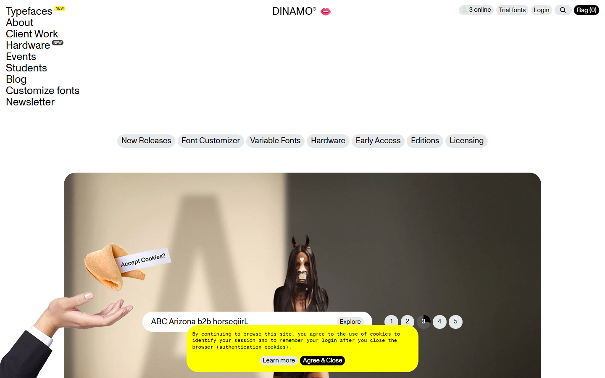
04 · mat-dinamo--d-hero.png
· abcdinamo.com · Вторая находка полюса, и она про двойственность. Словолитня: тёплый песочно-оливковый кадр, фигура в маске коня, рука с печеньем-предсказанием «Accept Cookies?». Песочный плюс абсурд — буквально «странное и тёплое» вместе, то есть оба регистра автора в одном экране. Меню голым списком слева, без украшений. Жёлтый баннер cookie в кадре, закрыть не удалось.
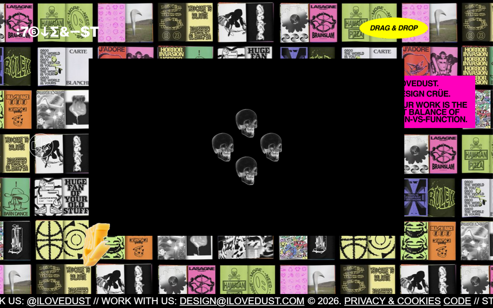
05 · mat-ilovedust--d-dense.png
· ilovedust.com · Второй экран стены постеров. Не открывал поимённо, вес 1,1 МБ.
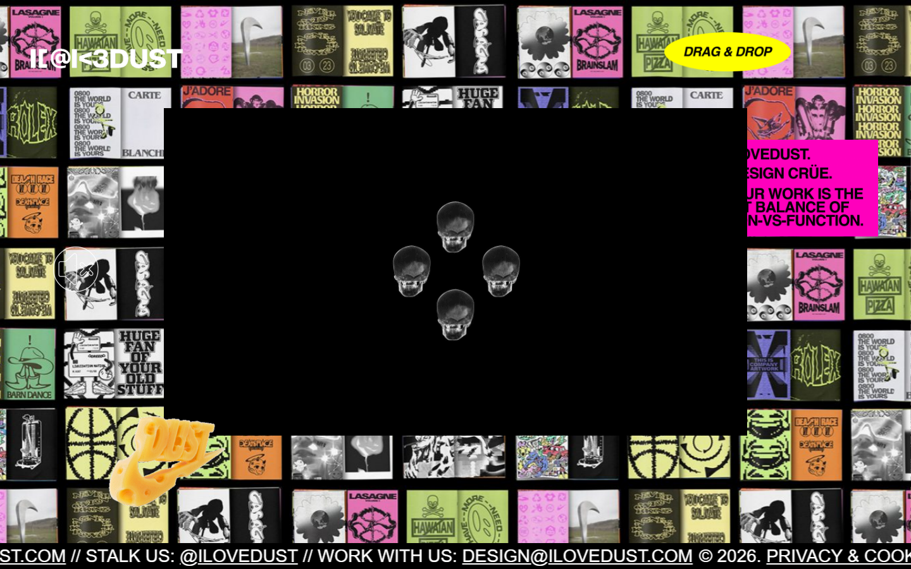
06 · mat-ilovedust--d-hero.png
· ilovedust.com · Стена постеров, кислотный розовый и салатовый, «DRAG & DROP», сетка тайлов уезжает под курсором. Материальность есть — но регистр панк-рейв, агрессивный. Противоположность просьбе «помягче». Держать как границу: вот докуда нельзя.
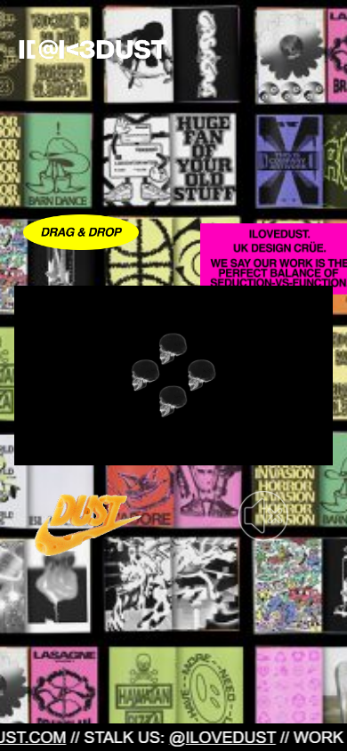
07 · mat-ilovedust--m-hero.png
· ilovedust.com · Мобильная версия, и она отвечает на важный вопрос. Стена постеров на 390 px не рассыпается: плитки просто становятся мельче, «DRAG & DROP» и подпись остаются. Доказательство, что плотная сетка мелких кадров работает на телефоне — прямо относится к нашему правилу «кадр — объект, не фон».
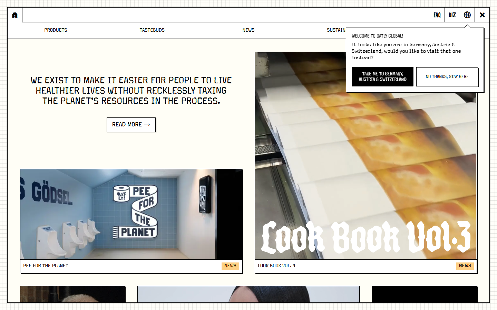
08 · mat-oatly--d-dense.png
· oatly.com · Второй экран: сетка карточек на той же кремовой бумаге, оранжевые метки-ярлычки. Видно, как фактура держится на плотном контенте, а не только в герое.
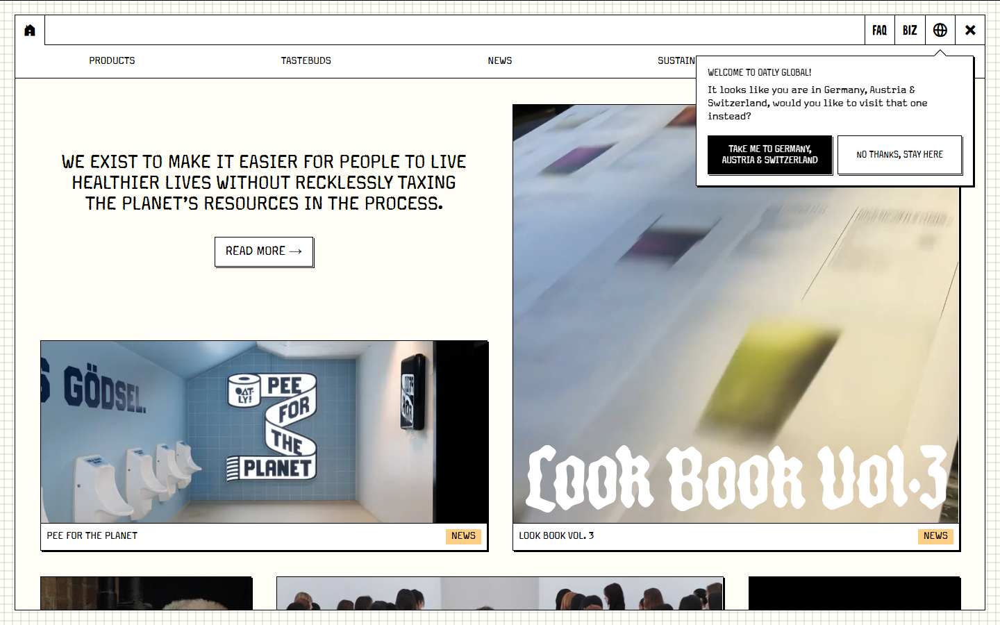
09 · mat-oatly--d-hero.png
· oatly.com · Лучший в полюсе. Кремовая бумага, по краю рамка в клетку как на миллиметровке, узкие рисованные капители, готическая вязь «Look Book Vol.3». Материальность и юмор в одном, тепло без сладости. Ровно тот регистр, который просила владелица: мягко, но не нежно-свадебно. В кадре всплывашка выбора страны — не мешает.
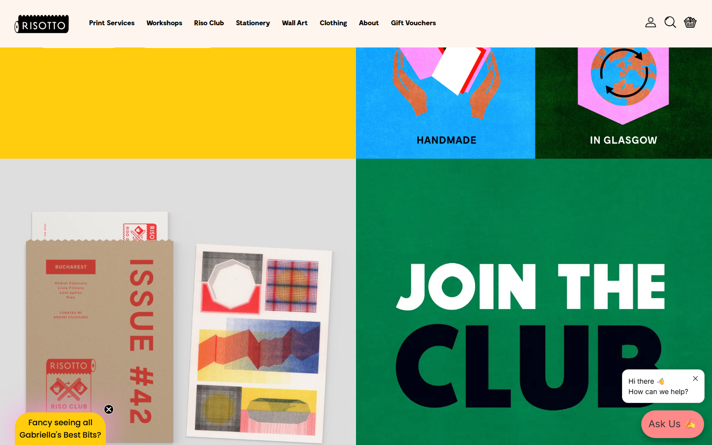
10 · mat-risotto--d-dense.png
· risottostudio.com · Плитки риso-отпечатков: видно сдвиг цветоделения и зерно краски.
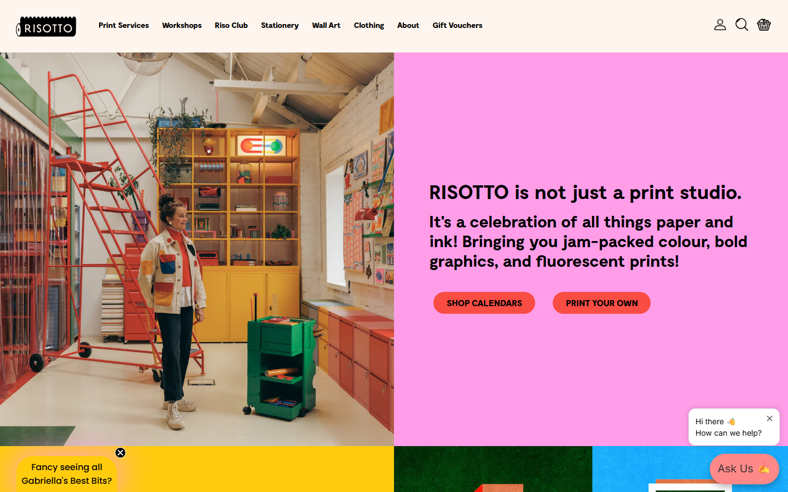
11 · mat-risotto--d-hero.png
· risottostudio.com · Студия риso-печати: «celebration of all things paper and ink», ярко-розовый блок рядом с фотографией мастерской. Материальность настоящая — краска и бумага как предмет. Палитра громкая, не наша, но отношение к материалу верное. В кадре виджет чата.
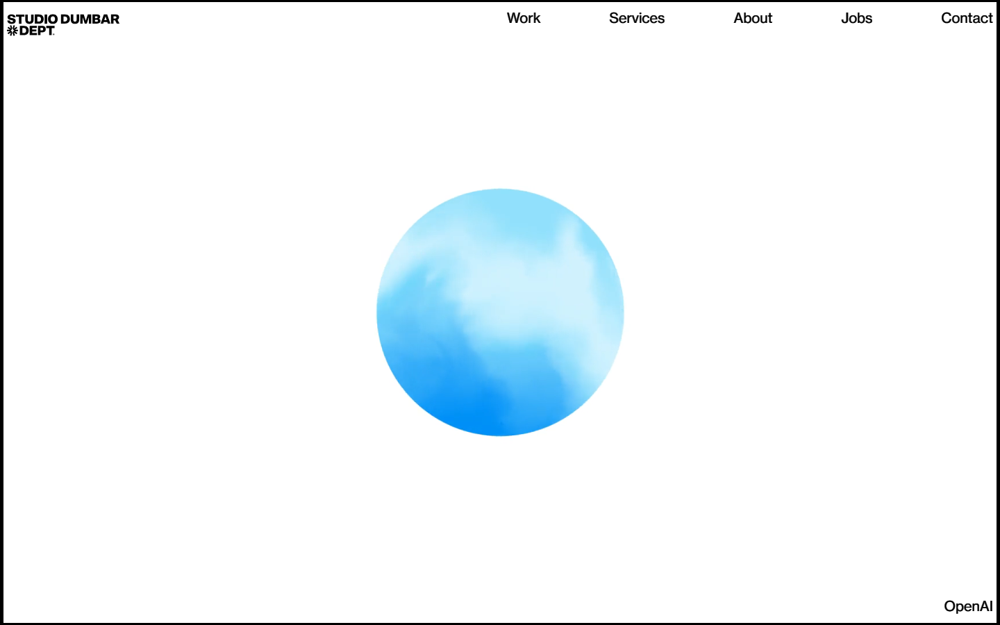
12 · mat-studiodumbar--d-hero.png
· studiodumbar.com · Мимо полюса. Белая страница, синий градиентный шар, подпись OpenAI. Ни зерна, ни фактуры. Оставлен только чтобы не притворяться, будто полюс собран.
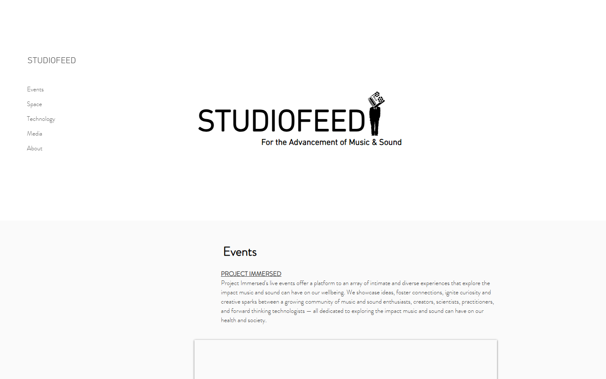
13 · mat-studiofeed--d-hero.png
· studiofeed.us · Мимо и брак. Белая страница, логотип, тонкий гуманистический шрифт, абзац текста. Выглядит как неоформленный шаблон. Никакой материальности.
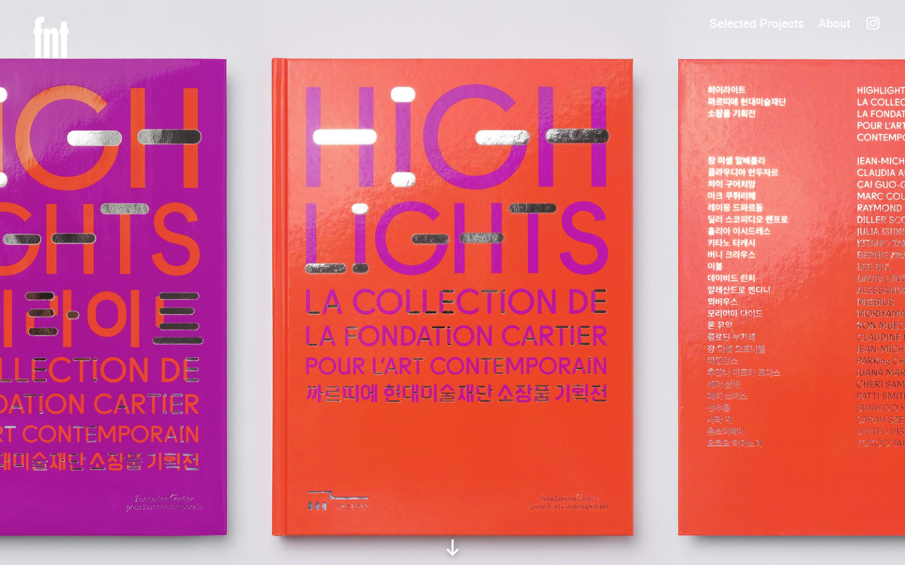
14 · mat-studiofnt--d-hero.png
· studiofnt.com · Единственный годный в полюсе. Фотографии печатных обложек с фольгой: физический объект, отражения, латиница и корейский вместе. Материальность настоящая, но это снятая на камеру печать, а не фактура, сделанная в браузере. Тёплый оранжево-фиолетовый — цвет живой.
Тёплая палитра вне фотонишы 4 снимков, с аннотацией 4
Песочный и зелёный там, где они НЕ значат «нежная свадебная съёмка». Смотри сюда после анти-полюса: вопрос не «нравится ли», а «чем это звучит иначе, чем Vigbo».
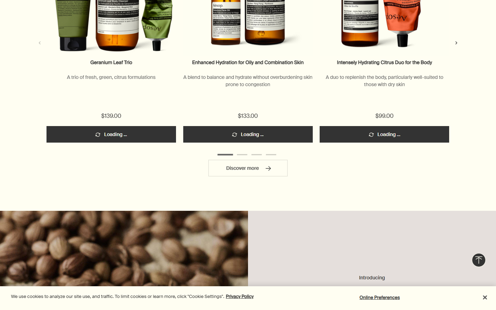
15 · pal-aesop--d-dense.png
· aesop.com · Второй экран на светлом кремовом: как та же палитра работает в светлой половине.
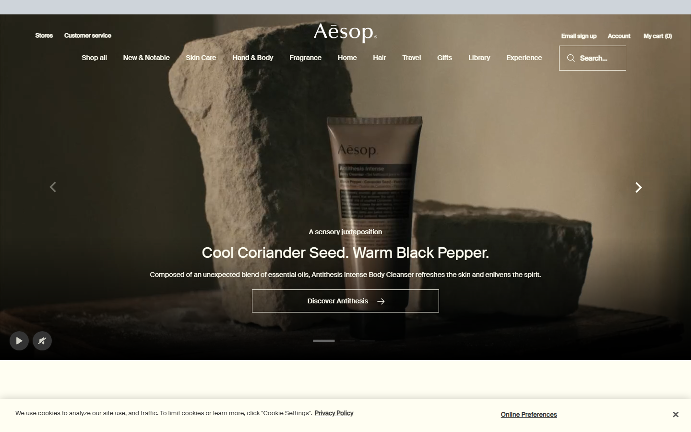
16 · pal-aesop--d-hero.png
· aesop.com · Ответ на вопрос «как тёплое звучит не по-свадебному». Песочный и оливковый, камень, флакон, тёмный тёплый свет. Строго, аптечно, взросло. Та же температура, что у владелицы, но регистр — сдержанность, а не нежность. Ключевой референс после находки про Vigbo.
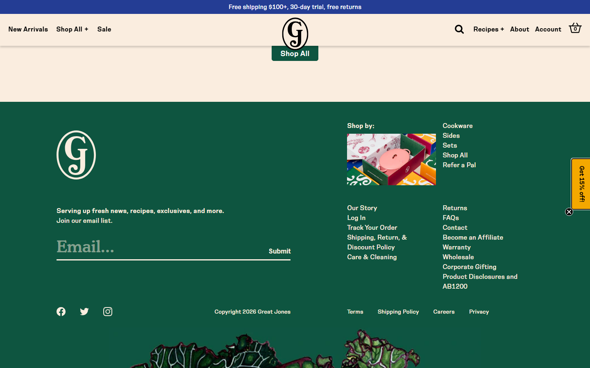
17 · pal-greatjones--d-dense.png
· greatjonesgoods.com · Каталог на кремовом: как палитра держит товарную сетку.
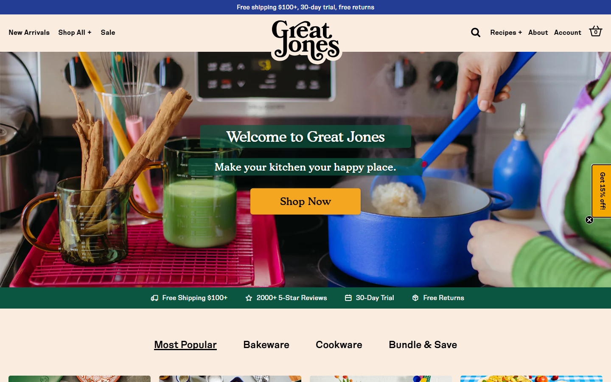
18 · pal-greatjones--d-hero.png
· greatjonesgoods.com · Кремовый фон, глубокий зелёный, игривая жирная антиква логотипа, посуда. Песочный и зелёный вместе в бытовом регистре — не романтика, а кухня. Есть промо-мусор по краям.
Наивный вектор 4 снимков, с аннотацией 4
Неровные фигуры, толстый контур, кривое намеренно. Под звёзды: «несуразные, не пятиугольные».
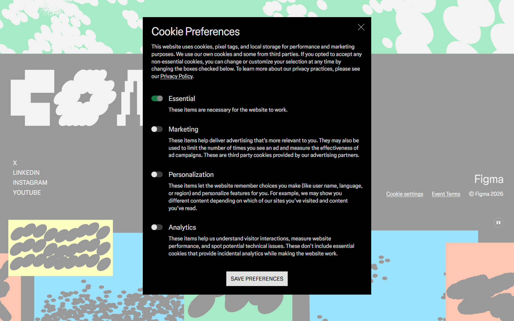
19 · nai-figmaconfig--d-dense.png
· config.figma.com · Второй экран, те же формы без модалки. Не открывал поимённо, вес 205 КБ — вероятно, полезнее героя.
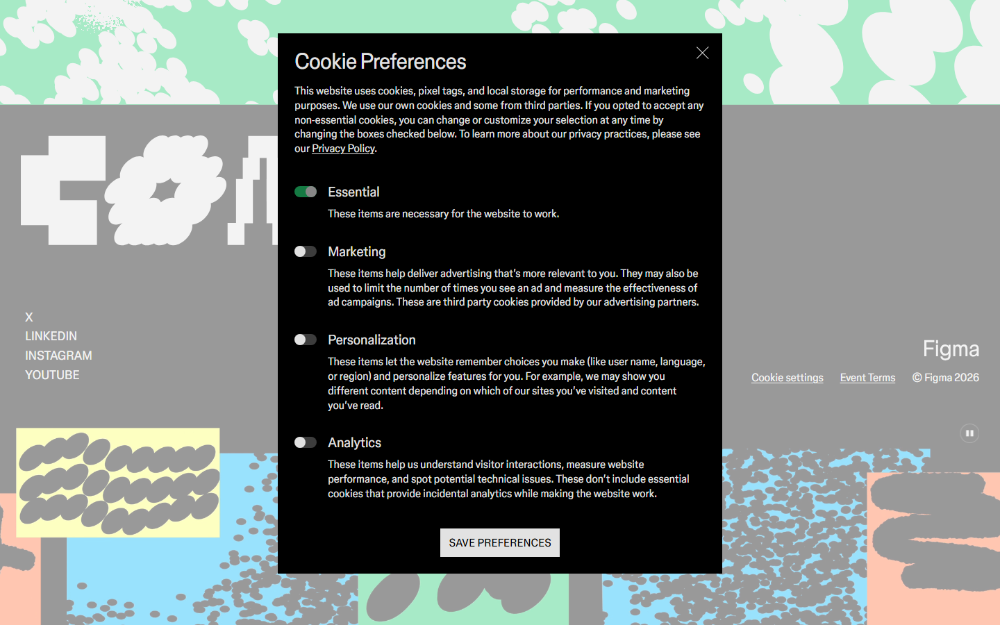
20 · nai-figmaconfig--d-hero.png
· config.figma.com · Мятно-зелёные, персиковые и голубые органические кляксы, облакообразные формы, наивная геометрия крупными пятнами. Больше половины экрана закрыто модальным окном настроек cookie — закрыть не удалось. Приём виден по краям, целиком — нет.
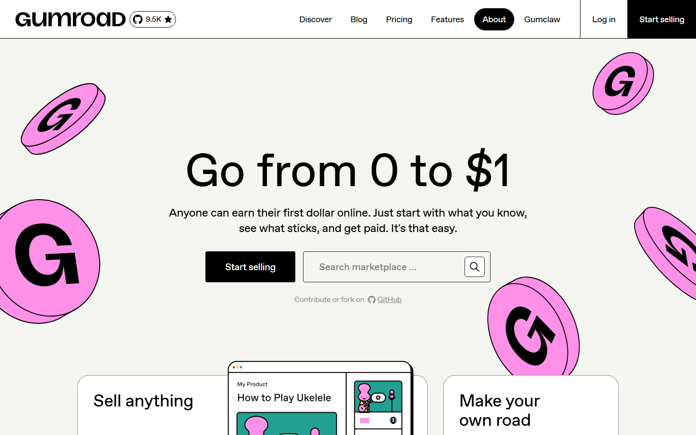
21 · nai-gumroad--d-dense.png
· gumroad.com · Карточки с наивными иллюстрациями внутри интерфейса.
22 · nai-gumroad--d-hero.png
· gumroad.com · Плоские розовые «монеты» с литерой G, толстый контур, наивная изометрия, бумажно-серый фон. Наивность как система, а не как милота: фигуры кривоваты намеренно и при этом собраны в порядок. Палитра не наша.
Морфинг и подмена глифов 4 снимков, с аннотацией 4
Под переход arisheniaa → аришения. Смотри на механику, не на цвет.
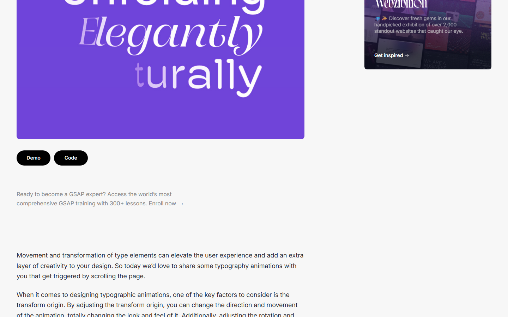
23 · axs-codropstype--d-hero.png
· tympanus.net/codrops · Подборка GSAP-анимаций типографики по скроллу. Ценность техническая, не вкусовая: показывает, чем именно исполняется послойный переход. Кадр снят с рекламным блоком в углу.
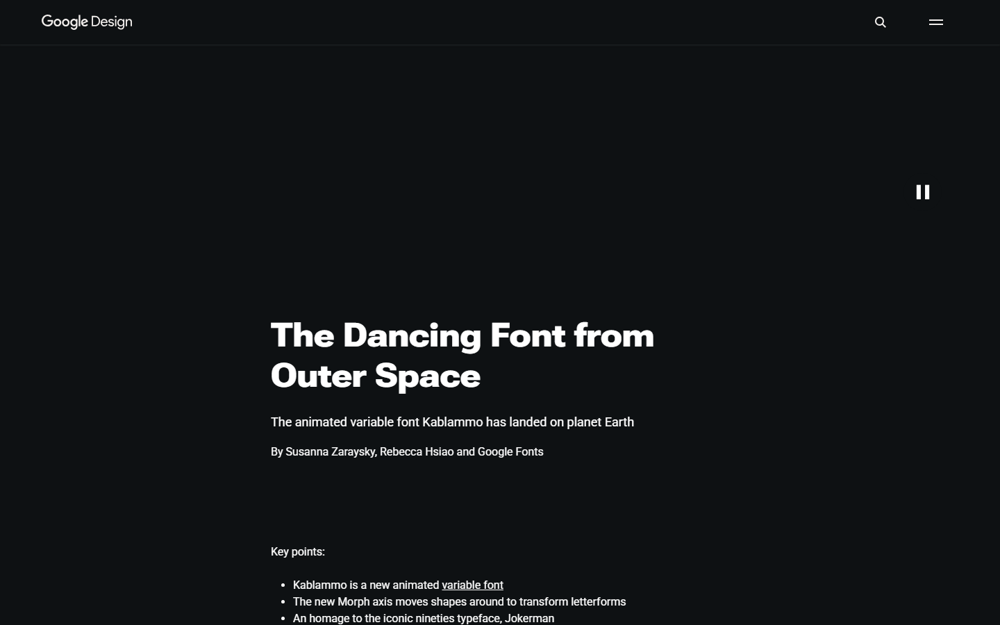
24 · axs-kablammo--d-hero.png
· fonts.google.com/knowledge · Самый ценный по технике. Статья Google Design про вариативный шрифт Kablammo с осью Morph, которая меняет форму литеры. Это буквальный механизм превращения одной буквы в другую, управляемый одной CSS-переменной. Ограничение: у Kablammo нет кириллицы, то есть как шрифт он нам не годится — годится приём.
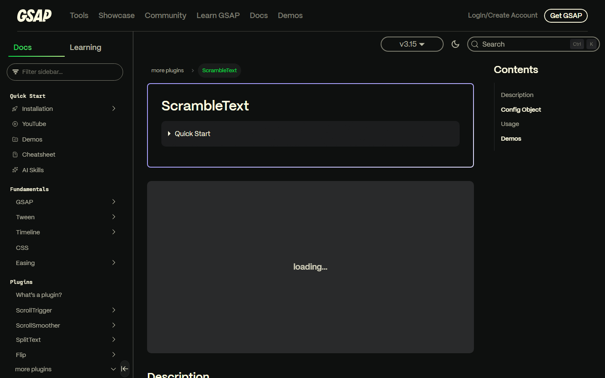
25 · axs-scrambletext--d-hero.png
· gsap.com/docs · Документация плагина ScrambleText: тёмная страница, оглавление, окно демо. Демо не догрузилось — в рамке «loading…». Источник техники, не визуальный референс; механику даёт, картинки не даёт.
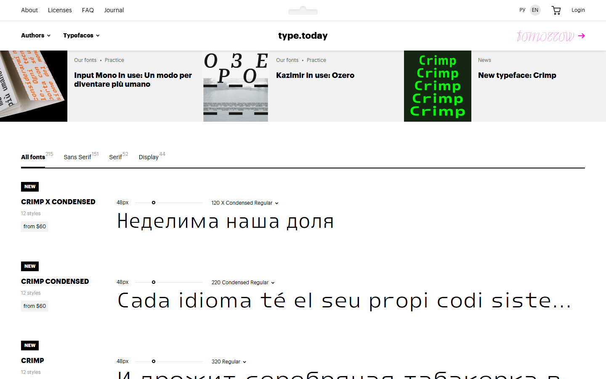
26 · axs-typetoday--d-hero.png
· type.today · Кириллица, и это главное. Русская словолитня, все образцы набраны по-русски: «Неделима наша доля» кеглем 48. Прямой источник для typography-ru.md: здесь видно, как гарнитура ведёт себя в кириллице, а не в латинском панграмме. К морфингу отношения не имеет — полюс в имени файла неверен.
Фотография как объект 5 снимков, с аннотацией 5
Кадр внутри сетки и типографики, а не фон под текстом.
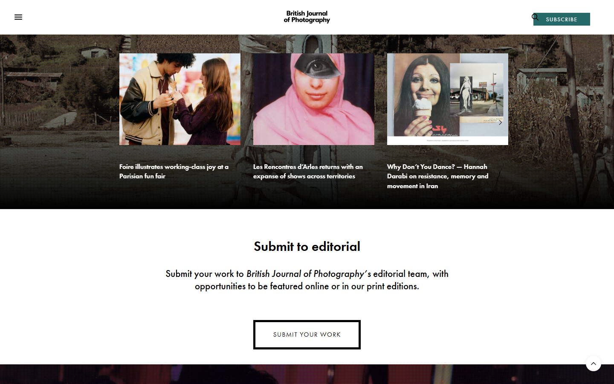
27 · pho-1854--d-dense.png
· 1854.photography · Второй экран журнала: сетка материалов. Не открывал поимённо; вес 1,2 МБ.
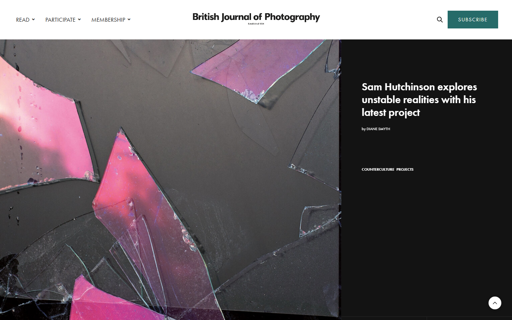
28 · pho-1854--d-hero.png
· 1854.photography · British Journal of Photography: кадр на две трети экрана, справа тёмная колонка с заголовком и автором. Фото не фон и не обои — оно врезано в сетку рядом с типографикой. Ровно правило Р4. Регистр журнальный, холодный.
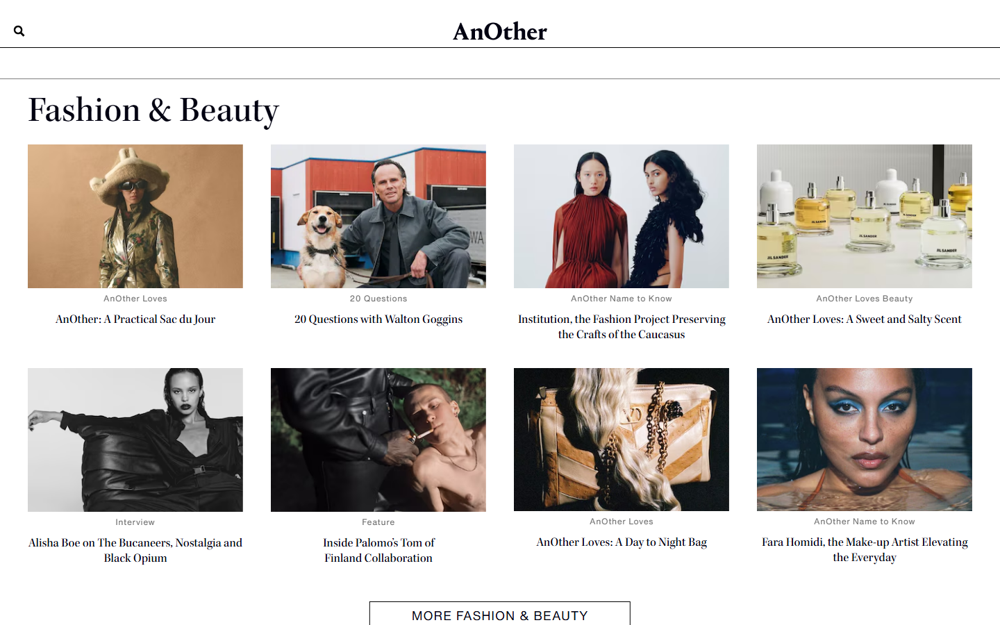
29 · pho-anothermag3--d-dense.png
· anothermag.com · Второй экран, лента материалов. Не открывал поимённо; источник и разворот те же, вес 650 КБ — содержимое на месте.
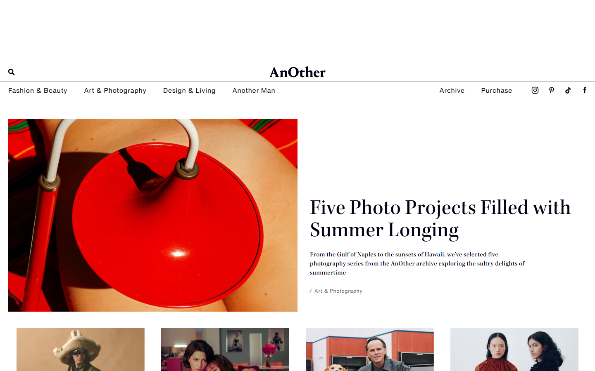
30 · pho-anothermag3--d-hero.png
· anothermag.com · Чистая иллюстрация правила Р4. Белый фон, тонкая антиква логотипа, слева кадр (красный абажур на теле), справа — заголовок крупной антиквой и врез. Кадр не фон, а элемент сетки наравне с текстом. Ниже — лента карточек 4 в ряд.
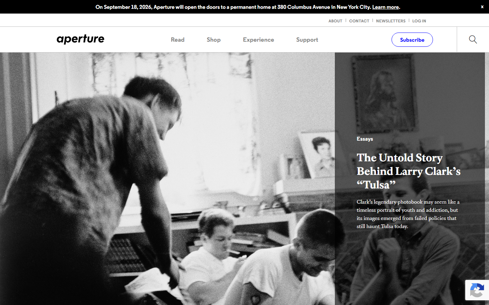
31 · pho-aperture--d-hero.png
· aperture.org · Фотоинституция. Ч/б кадр Ларри Кларка на две трети экрана, справа тёмная колонка с рубрикой, заголовком антиквой и врезом. Тот же приём, что у 1854, но строже и тише. Хорошая пара для сравнения: как один приём звучит в двух температурах.
Курсорный интерактив 8 снимков, с аннотацией 8
Реакция на курсор и палец. Проверяй, что остаётся на телефоне.
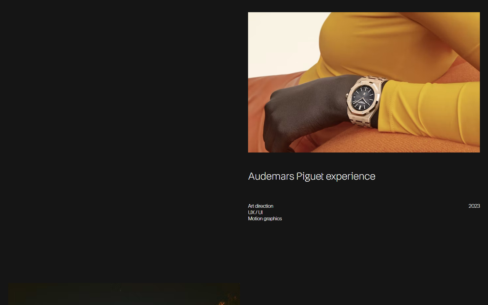
32 · cur-julieguzal--d-dense.png
· julieguzal.com · Полюс в имени неверен — это pho. Тёмная страница, кадр: жёлтый рукав, тёмная рука, часы, оранжевая подушка. Тёплый насыщенный кадр на почти чёрном фоне, под ним имя проекта и роли мелким гротеском. Показывает то, чего нет в других: как тёплая фотография работает на тёмном, а не на кремовом. Для нас это альтернативный ход, если светлый фон окажется слишком близко к Vigbo.
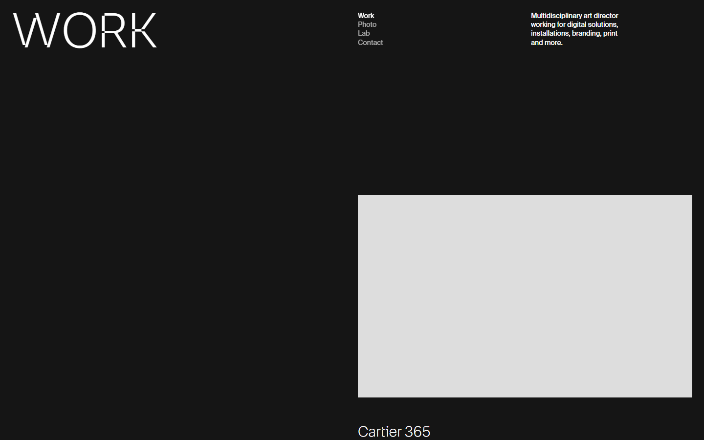
33 · cur-julieguzal2--d-hero.png
· julieguzal.com · Тёмный портфолио арт-директора: огромное тонкое «WORK», меню списком, справа описание. Кадр проекта не догрузился — серый прямоугольник-заглушка. Композиция читается, содержимое нет. Слабый.
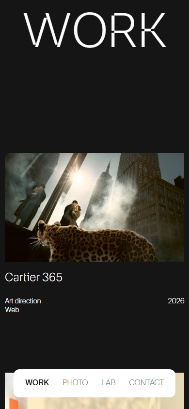
34 · cur-julieguzal2--m-hero.png
· julieguzal.com · Мобильная версия. Не открывал поимённо, вес 135 КБ.
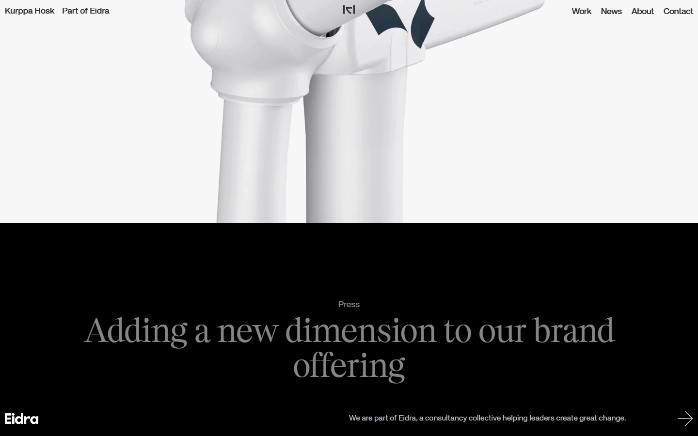
35 · cur-kurppahosk--d-dense.png
· kurppahosk.com · Второй экран того же, что признан лучшим референсом фактуры. Не открывал поимённо, вес 119 КБ.
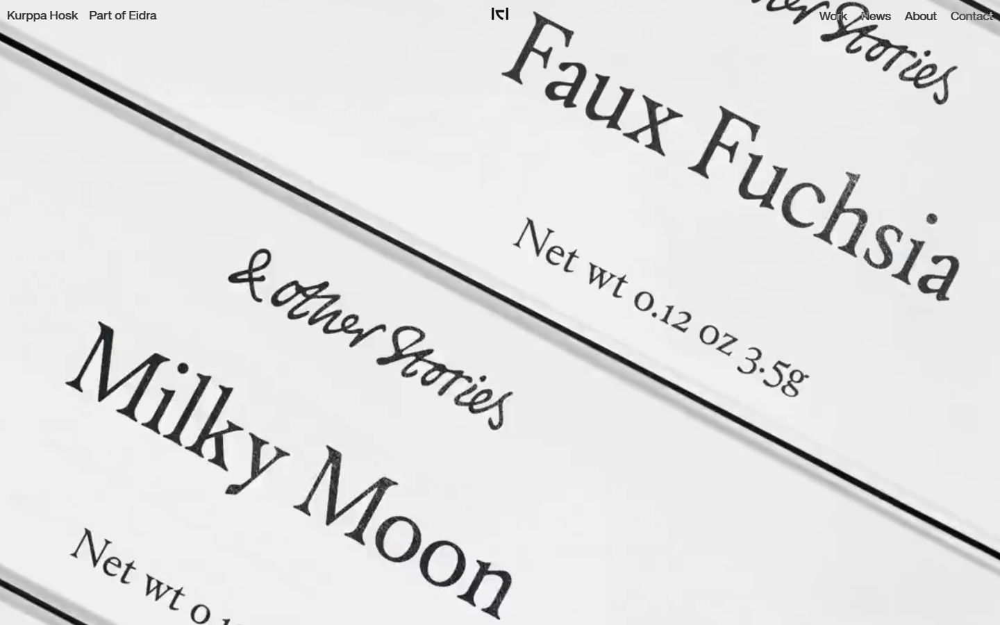
36 · cur-kurppahosk--d-hero.png
· kurppahosk.com · Полюс в имени неверен: это лучший референс материальности во всей выборке. Макросъёмка печатной упаковки под наклоном, антиква вплотную с рукописным курсивом, видна фактура бумаги и тиснение. Ручное и нежное одновременно — то, чего просит владелица. Переставить в mat.
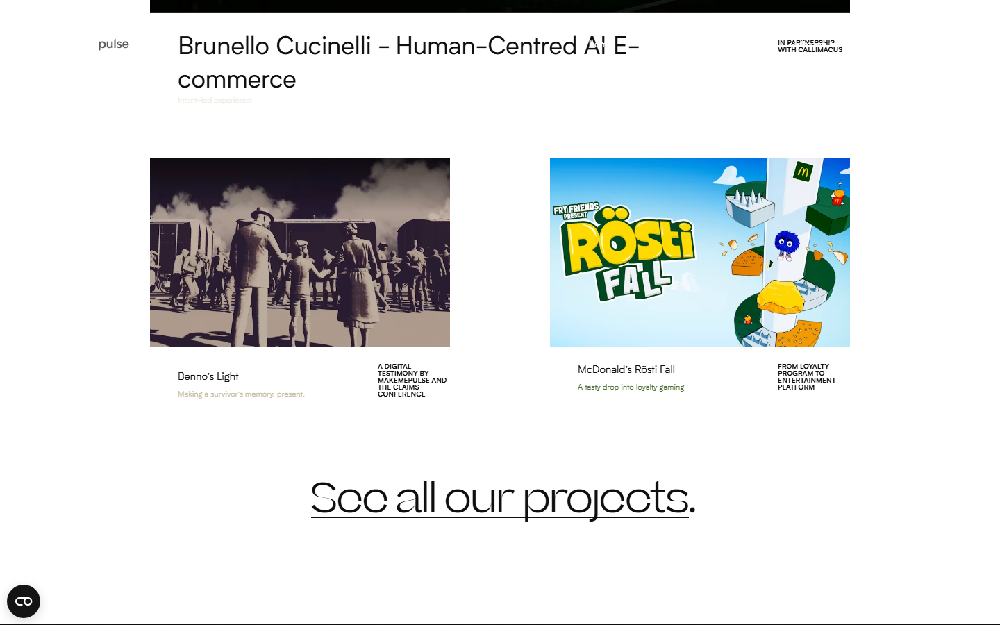
37 · cur-makemepulse--d-dense.png
· makemepulse.com · Второй экран, тёплый закатный кадр во всю ширину. Не открывал поимённо, вес 286 КБ.
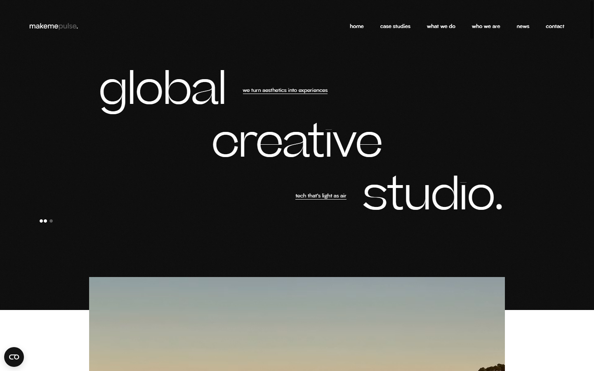
38 · cur-makemepulse--d-hero.png
· makemepulse.com · Тёмная студийная страница, крупная тонкая антиква в три строки, за ней наклонённые карточки проектов. Курсорная параллакс-механика есть, но кадр испорчен: четверть экрана занимает баннер cookie. Ценность низкая.
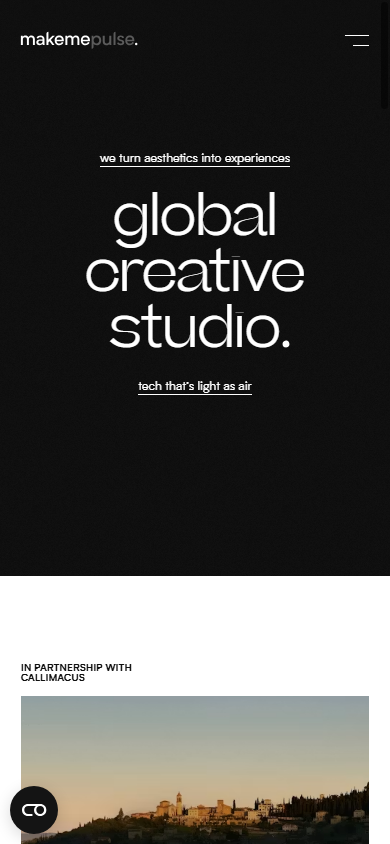
39 · cur-makemepulse--m-hero.png
· makemepulse.com · Мобильный: что остаётся от курсорной механики там, где курсора нет. Прямой ответ на пробел «интерактив на 390 px».
Скролл-режиссура 4 снимков, с аннотацией 4
Сцена, которой управляет прокрутка.
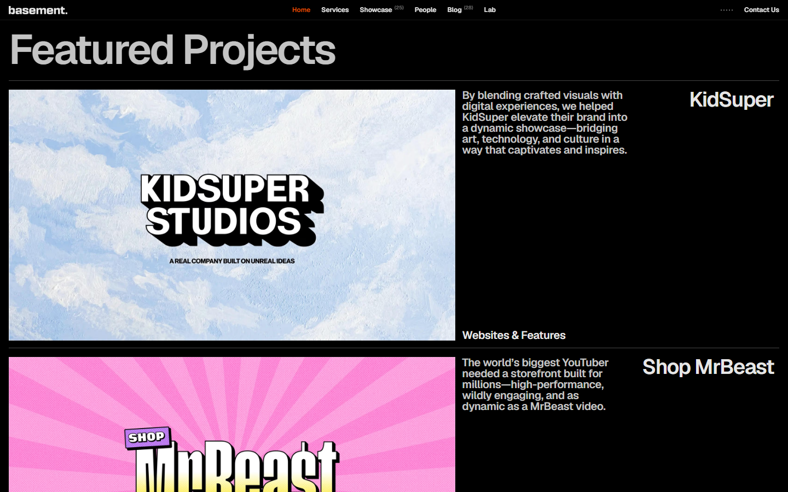
40 · scr-basement--d-dense.png
· basement.studio · Второй экран. Не открывал поимённо, вес 893 КБ.
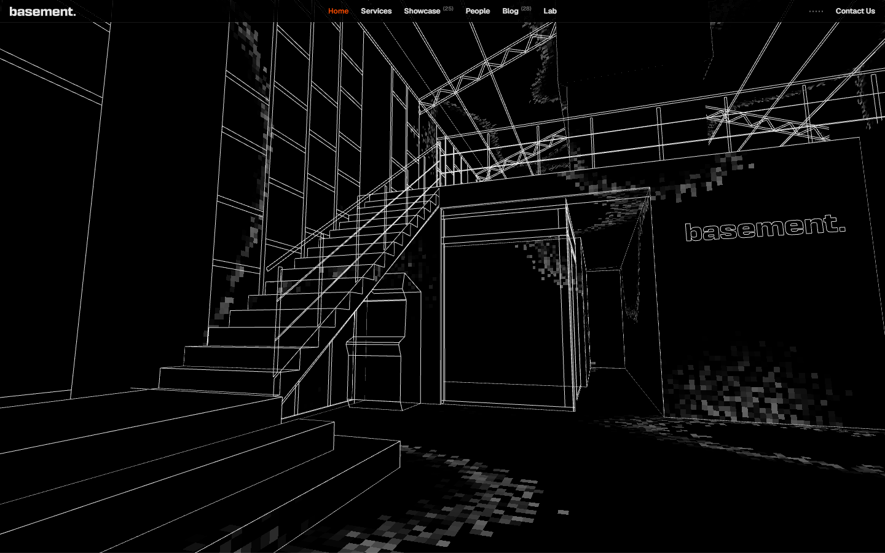
41 · scr-basement2--d-hero.png
· basement.studio · Настоящая скролл-сцена. Чёрный фон, белый каркасный 3D-интерьер: лестница, балки, надпись «basement.» на стене вдали, пиксельные пятна как шум. Сцена, которой управляет прокрутка. Холодное и техничное — держать как контраст, не как ориентир по тону.
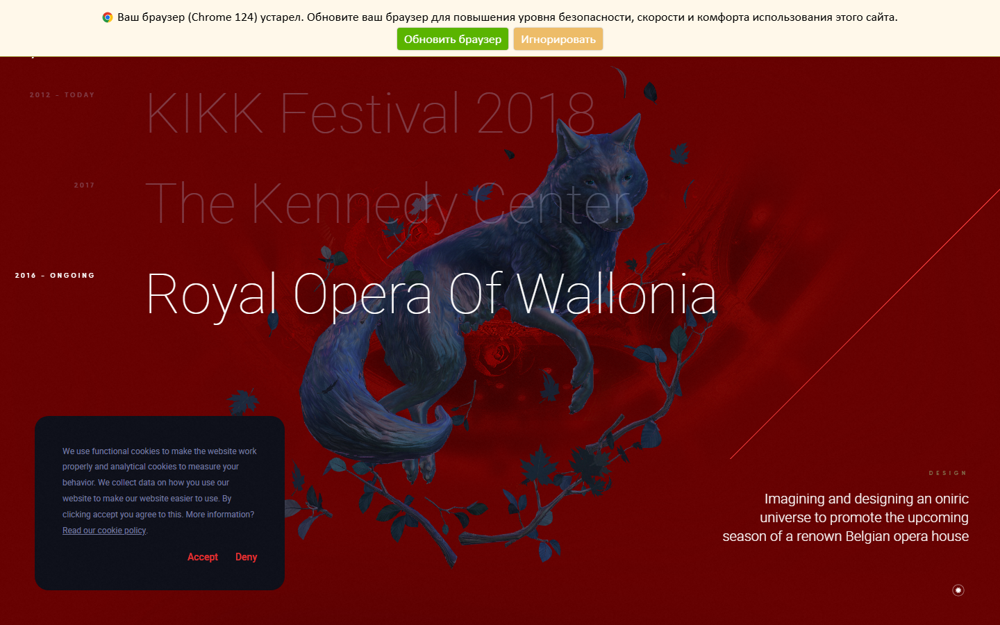
42 · scr-dogstudio--d-dense.png
· dogstudio.co · Второй экран. Не открывал поимённо, вес 939 КБ.
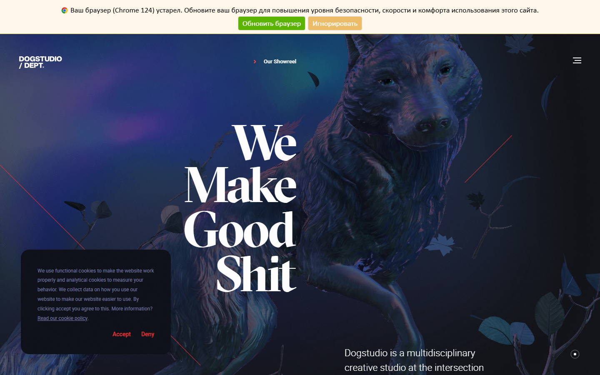
43 · scr-dogstudio--d-hero.png
· dogstudio.co · Тёмно-синий градиент, 3D-волк, «We Make Good Shit» крупной антиквой в четыре строки. Скролл-сцена с 3D. В кадре два баннера — cookie и «браузер устарел», четверть экрана. Композиция читается.
⚠ АНТИ-ПОЛЮС — от чего отличаемся 8 снимков, с аннотацией 8
Это НЕ примеры для подражания. Отбирать их в picked/ нельзя: они и есть то, во что одета вся ниша. Смотри и запоминай, чтобы не повторить.
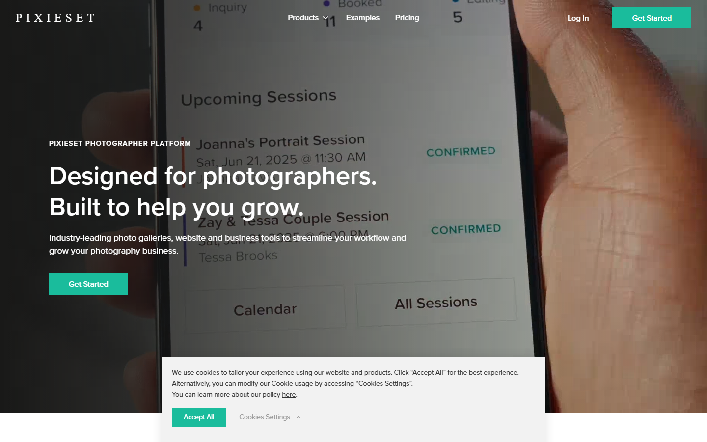
44 · anti-pixieset--d-hero.png
— anti: true · pixieset.com · «Designed for photographers. Built to help you grow.» Тёмный фон, фотография руки с телефоном, на экране — интерфейс брони: «Upcoming Sessions», «CONFIRMED». Мятно-зелёная кнопка. Это платформа, а не эстетика: продаёт workflow, а не красоту. Полезен как напоминание, что часть ниши говорит языком CRM. Баннер cookie в кадре.
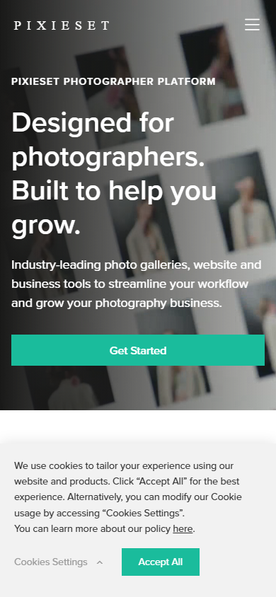
45 · anti-pixieset--m-hero.png
— anti: true · pixieset.com · Мобильная версия того же.
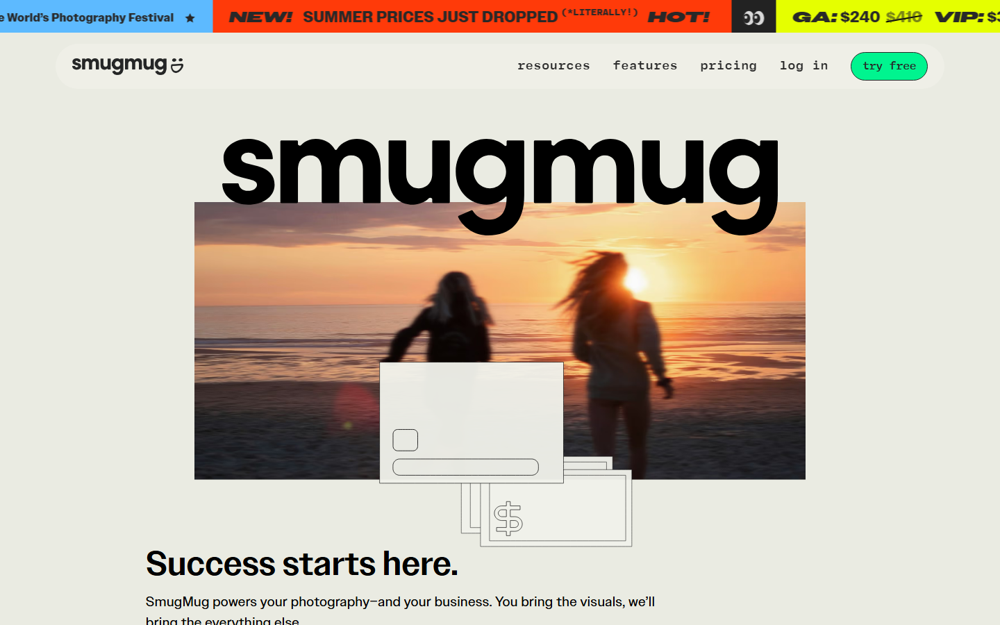
46 · anti-smugmug2--d-hero.png
— anti: true · smugmug.com · Ломает мою же находку и потому ценен. Не бежевый и не с тонкой антиквой: кремово-серый фон, гигантский чёрный геометрический гротеск «smugmug», закатное фото двух бегущих девушек, поверх — промо-полосы кислотных цветов. То есть связка «тёплый беж + тонкая антиква» — примета русского рынка, а не мирового. Прямое следствие для Ф2 в F1-STATUS.md.
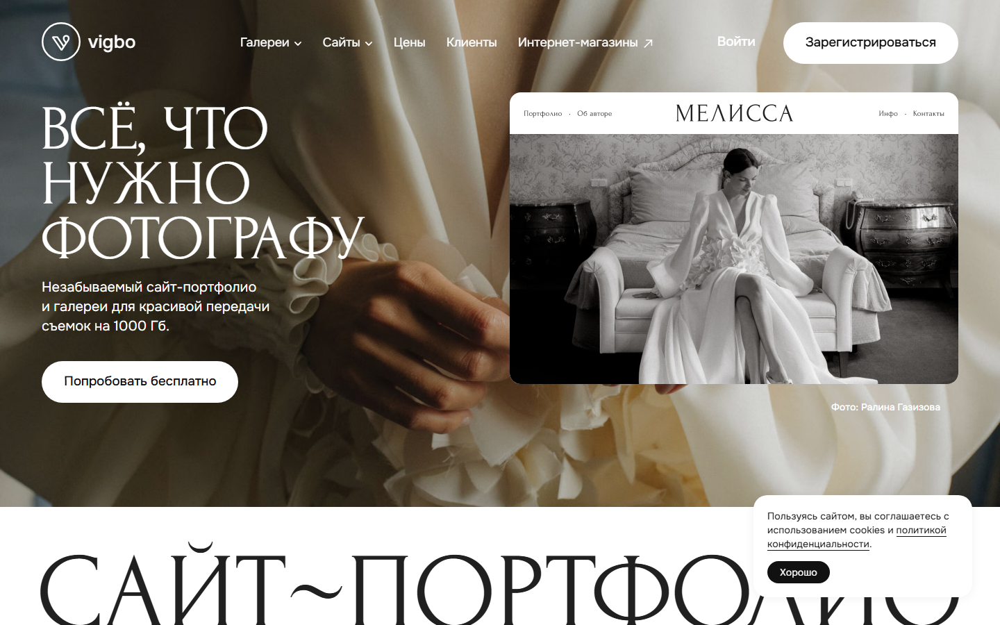
47 · anti-vigbo--d-hero.png
— anti: true · vigbo.com · Эталон того, от чего уходим, и главная находка Ф1. Заголовок «ВСЁ, ЧТО НУЖНО ФОТОГРАФУ» тонким широким антиквой, кремово-бежевый фон, ч/б кадр невесты в интерьере. Взять на заметку: этот сайт тёплый и кремовый — то есть ровно та палитра, к которой тянется владелица. Совпадение опасное, см. Ф1-STATUS.md.
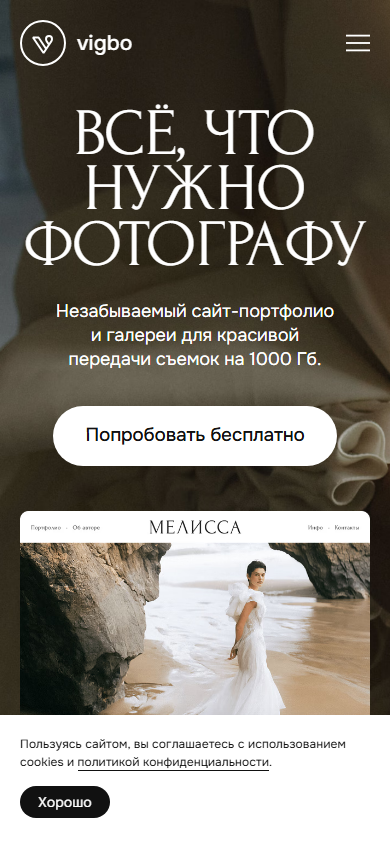
48 · anti-vigbo--m-hero.png
— anti: true · vigbo.com · то же на 390 px: заголовок дробится, кадр уходит под фолд. Показывает, как ниша решает мобильный — плохо.
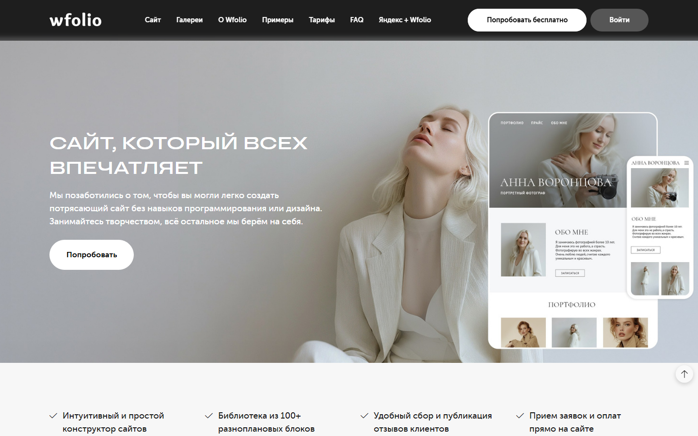
49 · anti-wfolio--d-dense.png
— anti: true · wfolio.ru · Второй экран, тёмная секция.
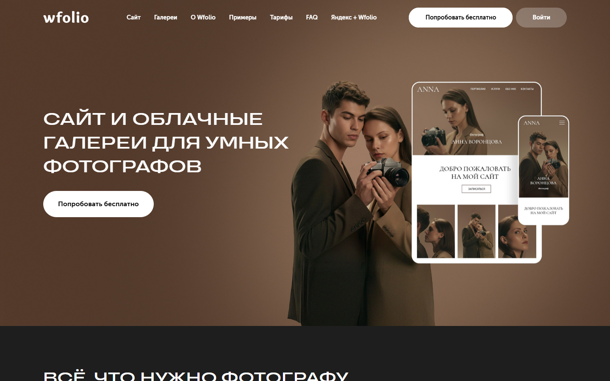
50 · anti-wfolio--d-hero.png
— anti: true · wfolio.ru · Подтверждает находку про Vigbo и усиливает её. «САЙТ И ОБЛАЧНЫЕ ГАЛЕРЕИ ДЛЯ УМНЫХ ФОТОГРАФОВ», фон — тёплый коричневый градиент, пара с камерой в бежевых пальто. Ниже — заголовок «ВСЁ, ЧТО НУЖНО ФОТОГРАФУ», дословно тот же, что у Vigbo. То есть два крупнейших конструктора рунета одеты в одну температуру и говорят одними словами.
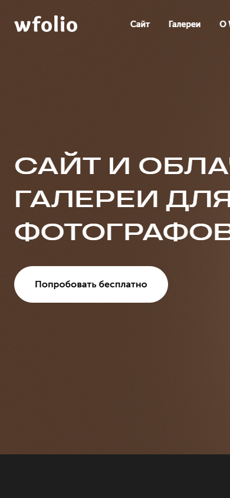
51 · anti-wfolio--m-hero.png
— anti: true · wfolio.ru · Мобильный: как ниша решает 390 px.